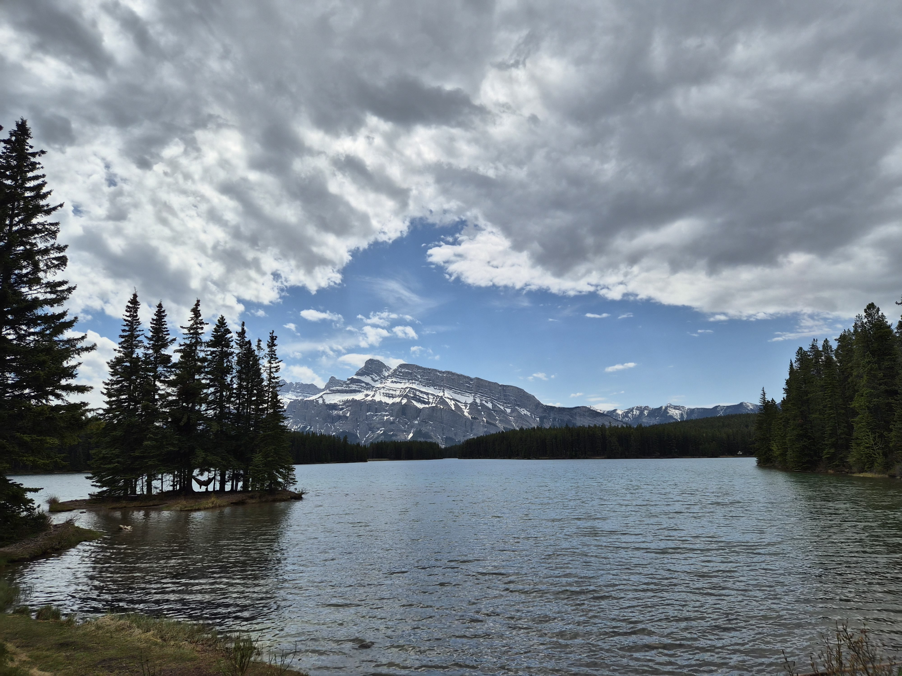
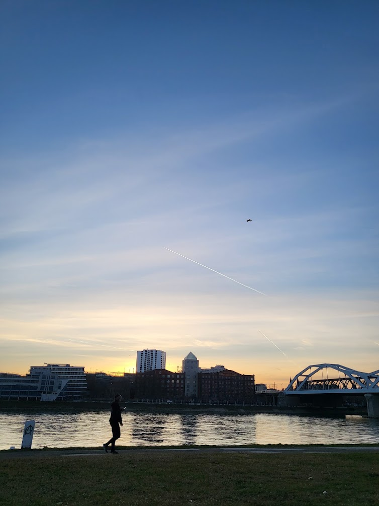
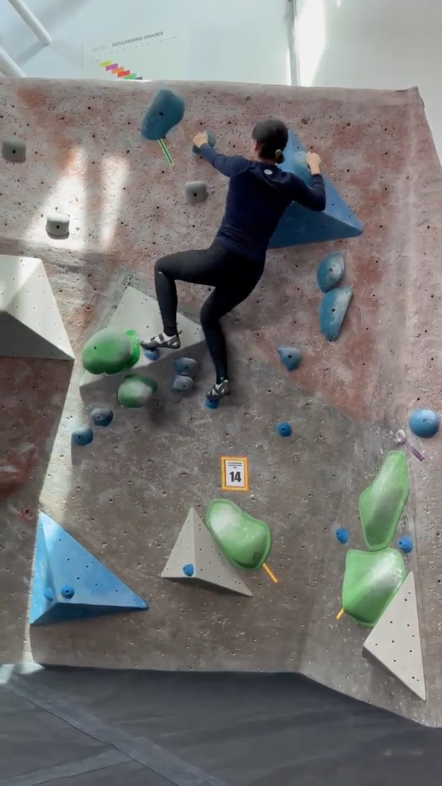
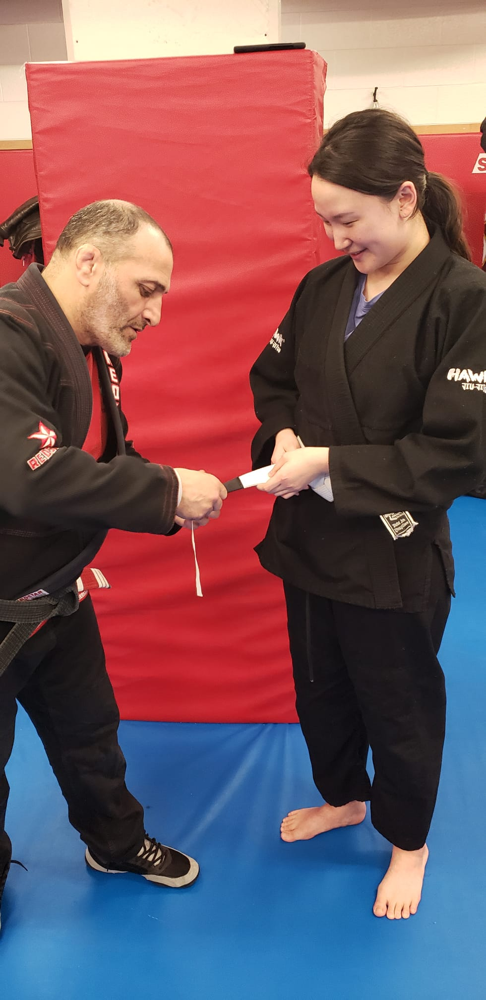
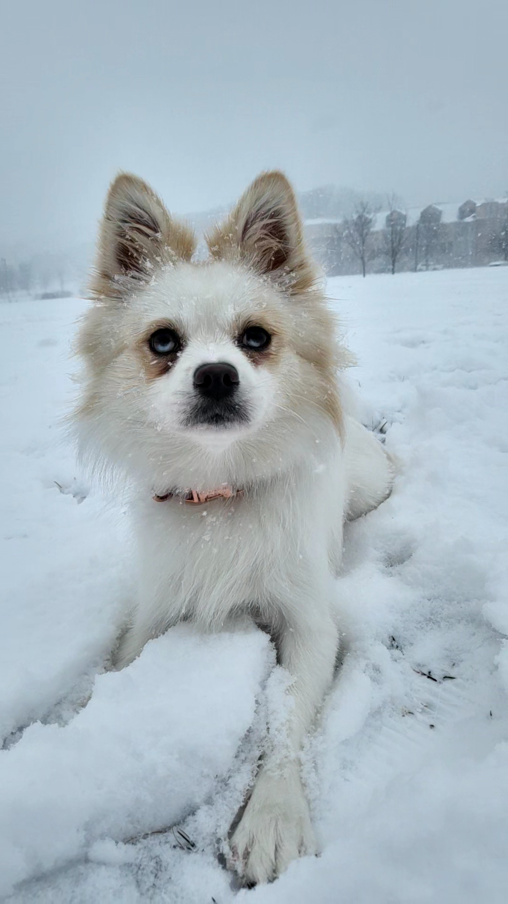

A Life Across Places
I was born in South Korea and have had the opportunity to study and live in Mannheim, Germany, and in Vancouver and Toronto, Canada. Moving between these places has given me the chance to experience different cultures, communities, and ways of life.
Along the way, I have also developed a deep love for nature, especially rivers and mountains. They are where I feel most at ease, whether I am exploring a new place or simply taking a break from a busy week.


Finding Puzzles
I have always enjoyed activities that make me figure things out. Two of my favorite hobbies are bouldering and jiu-jitsu.


Bouldering feels like solving a puzzle someone else has created. I look at the route, try to understand the problem, and experiment with different ways to move until something clicks.
Jiu-jitsu is a different kind of puzzle. There is no fixed solution because the other person is constantly responding to what I do. I have to pay attention, adapt, and find a new solution in the moment.
I think that is what I enjoy most about both. They are challenging, a little humbling, and incredibly satisfying when things finally come together.
Naru

And then there is Naru, my dog.
Dog agility is one of the things I love most. What makes it special is not just learning the courses or getting the movements right. It is the feeling of being completely connected with another living being, communicating without words, and learning to trust each other.
Some of my favorite moments are the simple ones: running a course together, figuring something out, and realizing that we somehow understood each other.
Different places, different puzzles, and one very energetic dog. These are some of the things that make life outside research and teaching so much fun.